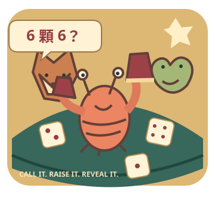

話可以喊大，骰子可不會配合演出。
吹牛
大挑戰骰盅一蓋，誰在膨風？
你、阿膨、阿風，三人一桌。
只看自己的骰子，猜全桌的數量。
不信上家？那就抓包見真章。

01 喊全桌的骰子「3 顆 4 點」＝全桌至少有3顆4點，不是只算自己。
02 越喊越大加數量，或數量相同時加點數。例如3顆4點 → 3顆5點／4顆2點。
03 抓包就攤牌達到喊的數量：抓包者少1骰。數量不足：喊的人少1骰。
本桌固定：1 點不是萬用。輸的人下一盅先喊；骰子歸零下桌。你先歸零就結束，撐到兩位對手都下桌即獲勝。
電腦只依自己的骰子、公開骰數與喊話判斷。所有對手與台詞均為虛構；不評估真實人物是否誠實。無帳號、儲存、上傳或金錢交易，不限時、無音效也能玩。
目前全桌喊話
你的骰子
只有你看得見這一排；其他人的盅先別偷看。
先選數量與點數，再按「就喊這個」。數字1–6可選點數；聚焦數量欄用↑↓調整。P／Esc暫停。
本盅喊話紀錄
先把嘴巴休息一下。
電腦回合也已暫停，沒有偷往下喊。